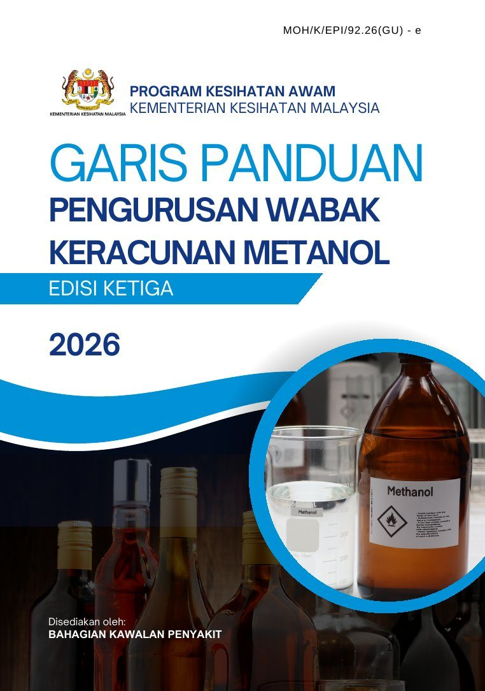

Latar belakang Bab 1–3 GP
Metanol (CH₃OH) ialah alkohol ringkas yang digunakan secara meluas dalam industri sebagai bahan mentah, bahan api dan pelarut. Keracunan berlaku terutamanya melalui pengambilan minuman beralkohol yang tercemar, tidak berdaftar atau dipalsukan, sama ada akibat fermentasi atau penyulingan yang tidak terkawal, atau metanol yang ditambah dengan sengaja.
Dalam badan, metanol dimetabolismekan kepada formaldehid dan asid formik. Pengumpulan asid formik menyebabkan asidosis metabolik dengan jurang anion tinggi serta kerosakan sistem saraf pusat dan saraf optik, yang boleh membawa kepada kebutaan, kegagalan organ dan kematian.
Gejala awal seperti loya, muntah dan sakit kepala tidak khusus dan sering menyerupai mabuk etanol. Sejarah pendedahan, penilaian klinikal yang teliti dan pengesahan makmal amat penting untuk mengesan kes lebih awal.
Dari sudut kesihatan awam, keracunan boleh berlaku secara sporadik atau sebagai wabak apabila sekumpulan individu terdedah kepada sumber tercemar yang sama.
Lazimnya dikaitkan dengan minuman beralkohol murah yang dipalsukan atau buatan sendiri.
- GP Pengurusan Wabak Keracunan Metanol Edisi Kedua diterbitkan.
- GP Umum Pengurusan Wabak Penyakit Bawaan Makanan dan Air Edisi Ketiga. GP metanol hendaklah dibaca bersamanya.
- SPKPK Bil. 26/2026 dan GP Edisi Ketiga 2026 berkuat kuasa. Definisi kes diperinci, tempoh tindakan setiap peringkat ditetapkan, carta alir spesimen dan kes kematian dikemas kini.
Objektif garis panduan
Memberi panduan jelas kepada anggota kesihatan dalam pengurusan wabak keracunan metanol.
Memperkukuh penyelarasan antara fasiliti kesihatan, makmal klinikal dan pasukan kesihatan awam.
Menyediakan prosedur standard bagi pengesahan makmal, pelaporan, siasatan epidemiologi dan kawalan wabak.
Ringkasan garis panduan Bab 4–6 GP
Jam bermula: garis masa notifikasi dan pelaporan
Notifikasi kes disyaki atau berkemungkinan selepas diagnosis (Lampiran 6).
Borang notifikasi yang disahkan sampai IPKKM, dikira dari PKD terima notifikasi.
Borang 1 dan 2 (Lampiran 11A, 11B) melalui JKN ke IPKKM, dari PKD terima notifikasi.
Laporan Harian (Lampiran 13) dan pelaporan CPRC (Lampiran 11C) sehingga wabak tamat.
Tiada kes baharu dalam 10 hari selepas kes terakhir. Laporan akhir menyusul (Lampiran 16).
Definisi kes
A. Disyaki mengambil minuman beralkohol atau bahan berpotensi mengandungi metanol dalam tempoh 5 hari sebelum bergejala
B. Sekurang-kurangnya satu gejala dalam tempoh 5 hari selepas pengambilan: penglihatan kabur secara tiba-tiba; gejala pernafasan (hiperventilasi, sesak nafas); gejala gastrousus (loya, muntah, sakit perut); gejala saraf pusat (sakit kepala, keliru, sawan, pengsan, koma).
Situasi 1: memenuhi kes disyaki DAN mempunyai hubung kait epidemiologi dengan kes disahkan.
Situasi 2: memenuhi kes disyaki DAN (i) high anion gap metabolic acidosis, iaitu mana-mana 2 daripada: pH arteri < 7.35, bikarbonat serum < 20 mmol/L, anion gap serum > 12 mEq/L; ATAU (ii) osmolal gap > 10 mOsm/L.
Kes disyaki atau berkemungkinan yang ujian darah atau urin mengesan kehadiran metanol.
Kes sporadik: satu kes disahkan tanpa hubung kait epidemiologi dengan kes lain.
Wabak: dua atau lebih kes berkemungkinan atau disahkan yang mempunyai hubung kait epidemiologi antara satu sama lain.
Individu tidak bergejala yang mempunyai sejarah pendedahan dan hubung kait epidemiologi dengan kes disahkan boleh dipantau di hospital atau di rumah selepas penilaian klinikal, dan dinasihatkan segera ke hospital jika gejala muncul.
Pengurusan spesimen klinikal
| Perkara | Kes disyaki / berkemungkinan | Kes kematian (BID / DID) |
|---|---|---|
| Spesimen | Darah dan/atau urin, sebelum rawatan dimulakan. Nyatakan permintaan ujian metanol dalam borang makmal. | Darah, urin, cecair vitreus, kandungan gastrik dan cecair hempedu. |
| Bekas | Darah ≥ 3 ml dalam vacutainer sodium fluoride (penutup kelabu), jangan emparkan. Urin 3 ml (penutup kelabu) atau 25 ml dalam botol universal + sodium fluoride 1%. | Vitreus dan hempedu dalam vacutainer penutup kelabu. Kandungan gastrik dalam botol universal tanpa sodium fluoride. |
| Borang | MKAK-BPU-U01/Rev2018 (Lampiran 7) | KIMIA 15-Pin.3/2020 (Lampiran 8, 8A) |
| Masa | Sebaiknya dalam 48 jam selepas pendedahan dan sebelum rawatan etanol. Nyatakan jika rawatan telah diberi. | Segera selepas kematian disahkan. |
| Hantar ke | MKAK Sungai Buloh (hubungi dahulu). Semasa wabak boleh ke Jabatan Kimia Malaysia terdekat (hubungi dahulu). Sabah dan Sarawak melalui kurier. | KIMIA melalui pegawai penyiasat polis, atau MKAK (contohnya kes DID) bersama borang MKAK-BPU-U01. |
| Simpan | 2–8 °C jika tertangguh. Jangan bekukan. Kotak sejuk berisi ais mengikut SOP Transport of Biological Specimens in Malaysia (2012). | |
| Keputusan | Makmal maklumkan pegawai pemohon. Salinan keputusan metanol positif dihantar kepada JKN dan IPKKM. Carta alir: Lampiran 9 dan 10. | |
Survelan dan siasatan
- Notifikasi kes daripada fasiliti kesihatan.
- Rumour surveillance: aduan, media sosial, media massa.
- Setiap maklumat awal disahkan oleh Rapid Assessment Team (RAT) PKD.
- Hospital: MO / PPP / jururawat dan/atau PPKP. Unit Kesihatan Awam hospital jalankan siasatan awal dan susulan (Borang 1, Lampiran 11A).
- Lapangan: Unit NCD daerah, MO / PKP / PPP / jururawat dan/atau PPKP. Jalankan Active Case Detection (Borang 2, Lampiran 11B).
- Temu bual bersemuka dengan kes, kontak, pengiring, majikan dan rakan: kronologi; tarikh, waktu dan tempat; punca disyaki (minuman tercemar atau tiruan, buatan sendiri, bahan lain); sampel produk; ciri produk (jenama, jenis, lokasi jualan, kilang).
- Semak rekod rawatan di hospital atau klinik rawatan awal.
- Lawat tempat kejadian, rumah, tempat kerja dan tempat bersosial.
Warga asing: kenal pasti tempat tinggal, tempat kerja dan status (PATI, PADI atau pemegang kad UNHCR).
- 250 ml atau dalam pembungkusan asal, dalam botol kaca atau plastik yang ditutup rapi.
- Sejuk atau suhu bilik, tidak melebihi suhu bilik. Jangan bekukan.
- Label dengan nama dan pengenalan kes, lak, dan rekod rantaian jagaan.
- Borang A, Peraturan 7(1) Peraturan-Peraturan Makanan 1985. Ikut SOP-PKKM-PD-03.
- Hantar ke MKKM atau MKAK (Lampiran 12).
Pengurusan wabak dan survelan dipertingkat
- Pegawai Kesihatan Daerah aktif dan ketuai Bilik Gerakan PKD; Unit NCD daerah selaraskan operasi.
- Gerakkan Rapid Response Team: pasukan penyiasat, penguatkuasaan dan pendidikan kesihatan.
- Laporan awal dalam 48 jam; Pelaporan CPRC (Lampiran 11C); Laporan Harian (Lampiran 13) setiap hari.
- Kemas kini klasifikasi kes ke IPKKM melalui JKN sehingga wabak tamat.
- Tutup bilik gerakan apabila tiada kes baharu dalam 10 hari selepas kes terakhir (Lampiran 14).
Maklumkan semua fasiliti kesihatan kerajaan dan swasta tentang:
- kejadian kes keracunan metanol;
- gejala dan kepentingan pengesanan awal;
- rujukan setiap kes disyaki ke hospital;
- notifikasi kepada PKD dalam 24 jam selepas diagnosis.
PKD kemudian jalankan siasatan kes dan pengesanan kontak, pemetaan lokasi berisiko, dan laporan polis bagi kes mencurigakan.
Penguatkuasaan
- Kesan produk di pasaran.
- Kenal pasti pengimport, pengilang atau pengedar.
- Siasat rantaian edaran produk kepada masyarakat.
- Daerah: UIPD dan UKKM.
- Negeri: UIPN dan BKKM.
- Pensampelan di tempat pemprosesan, pengedaran atau jualan, Peraturan 4 PPM 1985 (SOP-PKKM-PD-03).
- Lak produk disyaki sehingga keputusan makmal (SOP-PKKM-PD-05).
- Penyitaan bagi kesalahan pelabelan; pelupusan selepas prosiding (SOP-PKKM-PD-10).
- Notis Seksyen 32B Akta Makanan 1983 bagi pelanggaran pelabelan.
- Panggil balik produk, Seksyen 13C(1) Akta Makanan 1983 (SOP-PKKM-PD-08).
Jika risikan menunjukkan penghasilan, pengedaran atau penjualan tidak sah, PKD dan JKN libatkan JKDM, PDRM, KPDN atau PBT, dan adakan mesyuarat penyelarasan berkala di peringkat daerah atau negeri. Senarai agensi di bahagian Punca Kuasa.
Pencegahan: mesej pendidikan kesihatan
Elakkan minuman beralkohol yang:
- tiada pelabelan lengkap (nama dan alamat pengeluar, pengimport atau pengedar, kandungan);
- tiada setem cukai atau setem eksais yang sah;
- disyaki dicampur metanol atau bahan kimia berbahaya;
- diproses atau diedar secara haram, buatan sendiri atau sumber tidak diketahui.
Saluran (diselaras Unit Promosi Kesihatan daerah):
- keluarga, rakan dan kontak sosial kes;
- majikan, terutamanya sektor pekerja asing;
- semasa siasatan dan pemeriksaan di lapangan;
- kedutaan, UNHCR, pemimpin komuniti dan NGO;
- media sosial, aplikasi pesanan dan poster digital;
- bahan dalam bahasa dan dialek komuniti sasaran (Lampiran 15).
Laporan
| Laporan | Format | Laluan | Tempoh |
|---|---|---|---|
| Notifikasi | Lampiran 6 | Hospital/KK → PKD → JKN → IPKKM | 24 j + 24 j |
| Laporan awal | Lampiran 11A, 11B | PKD → JKN (ulasan) → IPKKM | 48 j |
| Kejadian ke CPRC | Lampiran 11C | Apabila wabak dikenal pasti (SPKPK Bil. 1/2006) | Segera |
| Laporan harian | Lampiran 13 | PKD → JKN → IPKKM | Setiap hari |
| Laporan akhir | Lampiran 16 | PKD → JKN (ulasan) → IPKKM | Wabak: selepas bilik gerakan ditutup. Sporadik: 48 j selepas keputusan makmal. |
| Analisis makmal | Laporan makmal | Makmal → pemohon; positif disalin ke JKN dan IPKKM | — |
Peranan mengikut peringkat
Hospital / Klinik Kesihatan L3 L6 L9
- Diagnosis dan klasifikasi kes.
- Ambil spesimen sebelum rawatan.
- Notifikasi ke PKD dalam 24 jam.
- Laporan polis jika unsur jenayah atau kematian.
- UKA jalankan siasatan Borang 1.
Pejabat Kesihatan Daerah L11 L12 L13
- RAT sahkan kes; maklumkan PKD.
- Siasatan lapangan, ACD, sampel produk.
- Aktifkan Bilik Gerakan dan RRT.
- Laporan awal, harian dan akhir.
- Penguatkuasaan UIPD dan UKKM.
Jabatan Kesihatan Negeri L6 L14 L16
- Hantar notifikasi disahkan ke IPKKM dalam 24 jam.
- Ulas dan hantar laporan awal dalam 48 jam.
- Ulas laporan akhir ke IPKKM.
- Penguatkuasaan UIPN dan BKKM.
- Penyelarasan agensi negeri.
IPKKM (BKP) —
- Terima notifikasi, laporan awal, harian dan akhir.
- Terima salinan keputusan metanol positif.
- Pemantauan wabak nasional.
Makmal MKAK · KIMIA · MKKM
- MKAK: spesimen klinikal dan produk.
- KIMIA: spesimen kematian dan bantuan semasa wabak.
- MKKM: analisis sampel produk.
- Maklumkan keputusan kepada pemohon.
PDRM L4 L5
- Siasatan jenayah dan arak haram.
- Pengurusan kes BID dan DID.
- Borang Polis 61 Pin 4/68 untuk bedah siasat.
- Hantar spesimen kematian ke KIMIA.
Alat bantu Klasifikasi kes · Gap · Tarikh akhir
Alat bantu klasifikasi kes
Berdasarkan definisi kes GP Edisi Ketiga (Rajah 1)Kalkulator anion gap dan osmolal gap
Nilai contohFormula mengikut Lampiran 1. Semua unit dalam mmol/L. Etanol dalam mg/dL dibahagi 4.6 untuk mendapat mmol/L.
Kalkulator tarikh akhir tindakan
Nilai contohRawatan klinikal Lampiran 1, 2A, 2B
Diagnosis dan siasatan asas
- Sejarah pengambilan dengan wide anion gap metabolic acidosis; gangguan penglihatan, defisit neurologi, sakit perut, muntah, hiperventilasi.
- Anion gap = (Na + K) − (HCO₃ + Cl).
- Osmol gap = osmolaliti diukur − [2(Na + K) + urea + glukosa + etanol]. Normal −2 ± 6; > 10 signifikan tetapi bukan diagnostik. Osmol gap meningkat awal dan menormal kemudian.
- ABG, RP, RBS, paras etanol darah, osmolaliti serum; koagulasi, LFT, CE, ECG, CT otak dan CXR mengikut indikasi.
- Paras formate serum belum tersedia di Malaysia.
Pengurusan
- Pra-hospital: ABC, LMA jika perlu, bolus cecair jika hipotensi, dekstrosa jika DXT < 4.0 mmol/L, bawa botol minuman ke ED, triaj zon merah atau kuning.
- Hospital: resusitasi; aspirasi nasogastrik dengan saluran udara terlindung jika hadir dalam 1 jam; arang teraktif tidak disyorkan secara rutin; infusi natrium bikarbonat untuk asidosis teruk.
- Vitamin: IV asid folinik (leucovorin) 1 mg/kg, maks. 50 mg, setiap 4–6 jam.
- Antidot secepat mungkin: fomepizole (pilihan utama) atau etanol.
- Teruskan sehingga metanol darah < 20 mg/dL dan/atau klinikal bertambah baik dengan asidosis, osmol gap dan fungsi buah pinggang pulih.
Dos antidot
| Antidot | Dos muatan | Penyelenggaraan | Catatan |
|---|---|---|---|
| Fomepizole IV | 15 mg/kg | 10 mg/kg setiap 12 j (dos ke-2 hingga ke-5), kemudian 15 mg/kg setiap 12 j | Cair dalam 100 ml NS atau D5%, infusi 30 min. Semasa dialisis: setiap 4 j selepas 6 j pertama. Pantau bradikardia dan hipotensi. Diputuskan secara konsensus kerana kos tinggi. |
| Etanol oral 20% | 0.8 g/kg (5 ml/kg) | Bukan peminum 0.5–0.8 ml/kg/j · Kronik 0.9 ml/kg/j · Dialisis 1.6–2.0 ml/kg/j | Dicairkan dalam jus, oral atau NGT. 125 ml alkohol 96% + air suling hingga 600 ml. |
| Etanol IV 10% | 0.8 g/kg (10 ml/kg) dalam 20–60 min | Bukan peminum 1.0–1.6 ml/kg/j · Kronik 1.9 ml/kg/j · Dialisis 3.1–4.4 ml/kg/j | 58 ml alkohol 96% ke dalam 500 ml D5%, stabil 24 j. Sasaran etanol darah 100 mg/dL. Pantau di ICU. Elakkan pada kanak-kanak dan ibu hamil. |
Jika pesakit turut mengambil etanol, ubah suai dos muatan supaya paras etanol darah tidak melebihi 100–150 mg/dL. Penyediaan larutan secara aseptik di bilik bersih (Lampiran 2A, 2B).
Indikasi hemodialisis
- Asidosis metabolik teruk (pH < 7.20) berterusan walaupun resusitasi dan antidot.
- Tanda toksisiti organ sasaran.
- Kegagalan buah pinggang oligurik atau anurik.
- Metanol darah > 50 mg/dL.
Kes disyaki dan prognosis
- Pesakit bergejala dimasukkan ke wad untuk siasatan lanjut.
- Darah dan urin untuk metanol bagi semua yang memenuhi kriteria kes disyaki.
- Pesakit sihat tanpa gejala boleh discaj dengan nasihat selepas notifikasi.
- Prognosis baik jika hadir awal; koma semasa tiba dan lesi putamen atau talamus pada CT dikaitkan dengan hasil buruk.
Punca kuasa & dokumen rujukan
Surat Pekeliling Ketua Pengarah Kesihatan Malaysia Bil. 26/2026
Arahan Pengurusan dan Notifikasi Keracunan Metanol

GP Pengurusan Wabak Keracunan Metanol, Edisi Ketiga 2026
Dibaca bersama GP Umum Pengurusan Wabak Penyakit-Penyakit Bawaan Makanan dan Air di Malaysia, Edisi Ketiga 2025.
Agensi dan peruntukan undang-undang berkaitan
| Agensi | Peranan utama | Akta / perundangan |
|---|---|---|
| KKM | Kesihatan awam dan keselamatan makanan | Akta Makanan 1983 (Akta 281); Peraturan-Peraturan Makanan 1985 |
| PDRM | Siasatan jenayah, pengedaran dan penjualan minuman beralkohol haram | Kanun Keseksaan; Kanun Tatacara Jenayah |
| JKDM | Kawalan import, eksport, penyeludupan dan duti eksais minuman beralkohol dan spirit industri | Akta Kastam 1967; Akta Eksais 1976 |
| KPDN | Penguatkuasaan perdagangan domestik, edaran dan jualan barangan tidak sah atau tiruan | Akta Kawalan Bekalan 1961; Akta Perihal Dagangan 2011 |
| PBT | Pelesenan dan kawalan premis | Akta Kerajaan Tempatan 1976; Undang-undang Kecil PBT |
| JIM | Urusan imigresen berkaitan PATI | Akta Imigresen 1959/63 |
Peruntukan Akta Makanan 1983 dan SOP penguatkuasaan
| Tindakan | Peruntukan | SOP |
|---|---|---|
| Pensampelan | Peraturan 4, PPM 1985; Borang A, Peraturan 7(1) | SOP-PKKM-PD-03 |
| Lak | Akta Makanan 1983 | SOP-PKKM-PD-05 |
| Penyitaan dan pelupusan | Akta Makanan 1983; PPM 1985 | SOP-PKKM-PD-10 |
| Notis pelabelan | Seksyen 32B Akta Makanan 1983 | — |
| Panggil balik produk | Seksyen 13C(1) Akta Makanan 1983 | SOP-PKKM-PD-08 |
Lampiran, carta alir & borang
Setiap borang dan carta alir dibina semula dalam format A4 untuk dicetak terus. Salinan PDF setiap borang dan templat Word yang boleh disunting turut disediakan.